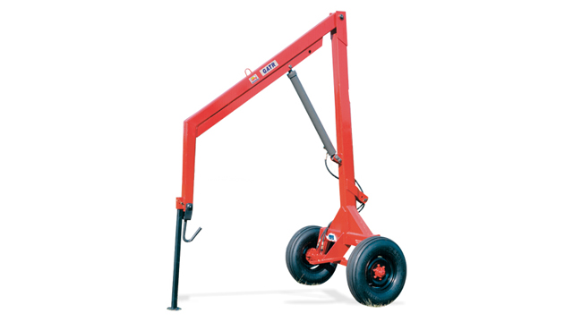

Catalogo
Plumas y Poceras
Pluma
Tatu Gat 1000 Hidraulica
Ver ficha tecnica

Pluma
Tatu Gat R Hidraulica
Ver ficha tecnica
Pluma
Tatu Gat RO Hidraulica
Ver ficha tecnica
Pocera
Tatu PS 9" 12" 18"
Ver ficha tecnica